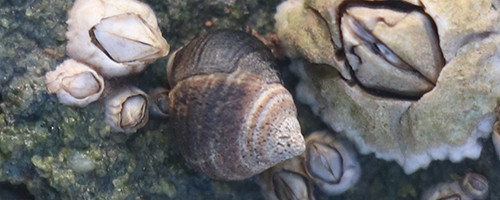

Acadian Adventures gives you the opportunity to choose the order in which you'd like to attempt some of the area's most exciting trails. Paths below are listed from least to most difficult, so you can build up your endurance and skill.

Acadian Adventures
555 Mountain Top Way
Southwest Harbor, Maine 88791
© 2019 Acadian Adventures
tmajchrzak@hccfl.edu
888-555-5276-889